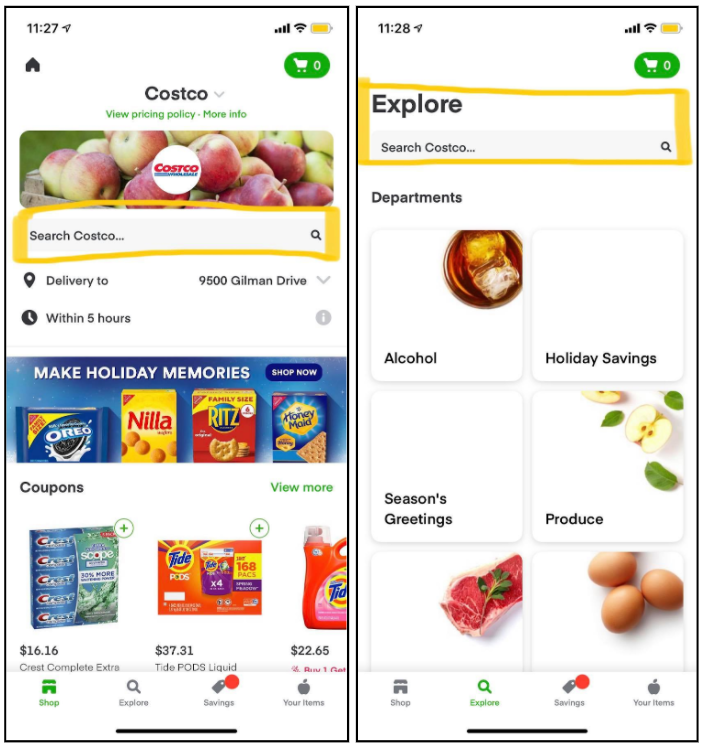
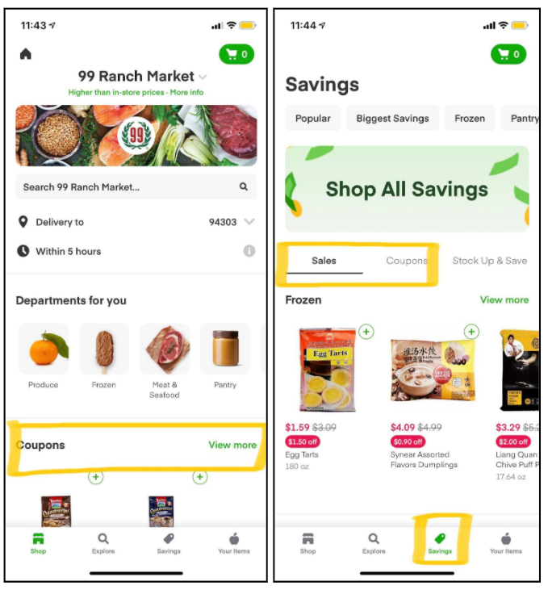
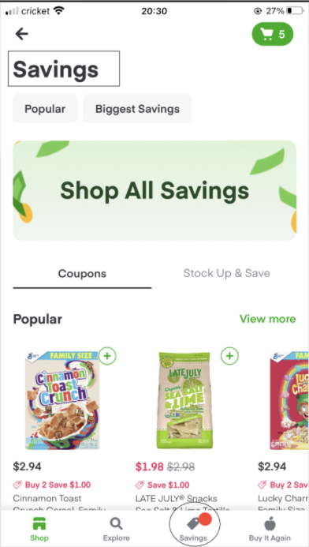
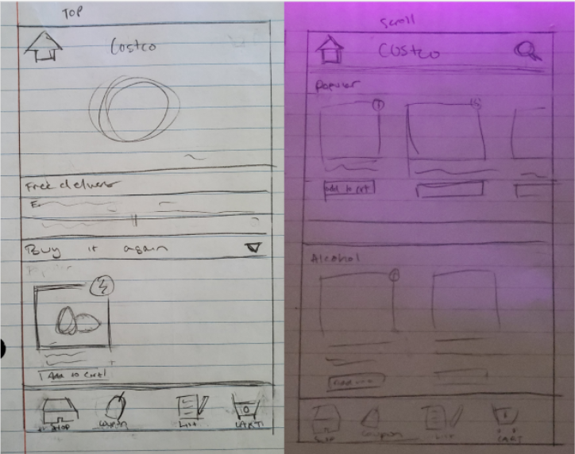
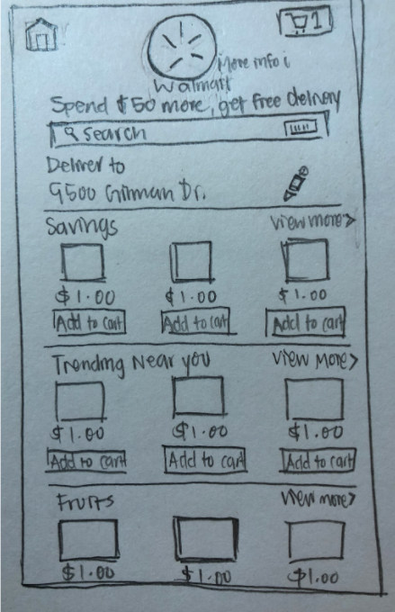
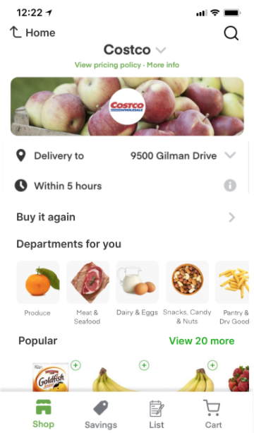
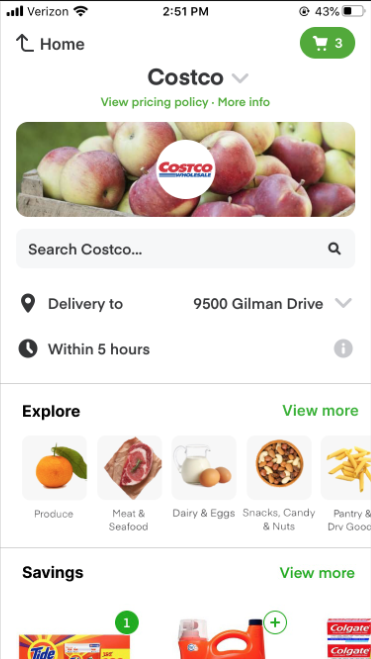

My Role
UX Designer
Time Range
5 Weeks
Team
Christine Fan, Avery Hom, Audrey Fu, Zhen Xu
Introduction
For this project, we will be redesigning the mobile app - Instacart. Instacart is a grocery delivery app that aims to help users to get their grocery without the need to go to a physical store. This type of service is especially important for many individuals, like college students during the shelter-in-place experience in order to acquire their necessities in a safe manner. The goal of redesigning Instacart is to deliver a better user experience so that people regardless he or she is a novice user to Instacart can still navigate through the app.
User Testing
In the first round of user testing, we interviewed 4 users. They either need to buy groceries online during the pandemic or have never used online grocery shopping given that they are a bit hesitant about the credibility of the online platform. In general, we conveniently sample the college student population. We hypothesize that college students may increase the usage of online grocery shopping is due to the absence of owning a car. Overall, the limitations we observed are not being very familiar with ordering groceries online since most people go to physical grocery stores prior to the shelter-in-place experience. Also, since it’s a convenient sample, we may not be able to generalize the results across all groups, such as parents who use online grocery shopping to ensure their family’s health and safety, professional adults who seek convenience, and many more.
To understand the problems with the app, we created various tasks to test users on. To account for confounds, we interviewed the users on their prior experience (of purchasing groceries online) before giving them their tasks. After the tasks, we have a short debrief with them and have them rate their experience interacting with the app. The introductory questionnaire, main tasks, and the deberief are listed below:
| Introductory Questionnaire |
|
| Task 1 |
|
| Task 2 |
|
| Task 3 |
|
| Debrief |
|
These tasks take users to various areas of the app. By observing these activities, the team can pinpoint areas where users experience confusion. For our first round of testing, we decided to observe the users in-person, as their gestures and gaze outside the screen provide valuable information. Given the COVID 19 pandemic, this criteria limits us from the user's selection.
Analysis
User #1
The first user who has never used an online grocery shopping mobile app before since she prefers in-person shopping that allows her to check the food quality. The top 3 usability errors she encountered are the following:
- Accidentally swipe “too” far right that brought up the cart page while intended to view more for a category.
- Unsure if she had correctly added the item she wanted to the cart since she did not see any confirmations from the screen.
- Having trouble recognizing some important information. For instance, she intentionally chose stores she knew because she was unaware where to check for more information about the stores. Also, she cannot identify how much she will be spending given that when she aimed to purchase products from different stores, she did not recognize the total prices are separated into different stores, while total price is situated in the green button.


Despite these errors she encountered, she did manage to go through the normal checkout process as well as locating the items she wanted by constantly using the search function. In a way, she already had a grocery list in her mind and did not explore the different options in different store’s homepage.
User #2
- Confusion over zip code placement: User #2 found it confusing to change the delivery address since they thought it was in the profile page at first when it was actually on the homepage in small text. This would be a violation of the “match between system and the real world” heuristic.
- Wanted to be able to remove all items from the cart at once, but found that there was no “remove all” button. This falls under the “match between system and the real world” heuristic as well.
- Lack of important app information like meeting delivery minimums from the get-go, and also felt that the “add to cart” function wasn’t responsive enough. These both fall under the Visibility of system status heuristic.
User #3
This user was someone who has used Instacart multiple times before and is more familiar with the app. They have also used various other grocery apps such as Amazon. User 3’s top 3 usability errors are as follows:
- User wasn’t able to remove all of the items from the cart at once, so User #3 had to remove all of the items individually. This falls under a violation of the “match between system and the real world” and the “user control and freedom” heuristics.
- When the user was trying to add items to the cart using the small circle icon, they often made slips by accidentally hitting outside the small box instead of increasing the quantity of the item. This violates the “error prevention” heuristic as the icons for those actions are incredibly small and there are no constraints to prevent those slips.
- The user wanted to access the products on sale in the store, but knew that there was more than one section on the page that was related to savings. Thus, the user became slightly confused on which one to use. This falls under a violation of the “consistency and standards” heuristic as more than one element on the page can lead to the same result.
Things that worked well for this user was that they were able to easily add items to the cart without having to click on the product icon.
User #4
This user had no experience buying groceries online. Prior to COVID, they bought produce in person because they liked to check the quality. After COVID, the pricing for grocery delivery was too much to consider using. Their top 3 usability errors are:
- User 4 often pulled up the cart tab by mistake due to the “swipe right for more products” and “swipe right for cart” function overlapping in many areas.
- When adding items to cart using the quick-add button, the user often accidentally opened the product listing instead. This was due to the quick-add button being too small.
- Because there are many ways to do the same thing, the user was often confused between options - for example they were not sure if “Savings” and “Coupons” would take them to the same page.
Componeent to Redesign
After user testing, we narrowed down the component to redesign: the bottom navigation bar of the store pages.
General issues with the app: After the first round of user testing, we knew we wanted to alter something within the store pages because it was one of the main screens the user interacted with besides the Home page. Thus, the store page should be as intuitive as possible so that users have a smoother online shopping experience. However, after testing, we discovered that a lot of the users found this page to be somewhat overcrowded and slightly overwhelming. Not only that, there were a lot of redundant features that did the same thing. Because of this, the users had a harder time to locate things within the store and often were unsure about what each feature would do.
How fixing the navigation bar can help:
While user testing, none of the users used the “Explore” page on the navigation bar because there was a search bar that was more obvious on the page. Not only that, when used, the search bar and the Explore page essentially had the same function. Thus, it was redundant to have both buttons on the page and added to the clutter that can overwhelm the user.
Another redundancy within the navigation bar is the “Savings” tab and the “Coupons” section on the initial store screen. When the user selects “View more” in the Coupons section, it actually leads to the same page as it would if they selected the Savings tab. This redundancy and inconsistent labeling is also a violation of the consistency and standards heuristic.
In addition to the redundancy shown above, the original Instacart mobile app lacks clear system status. For instance, if users directly click the coupons section (that is equivalent to savings section) in the shop’s front page, the navigation bar will not reflect the newest status that the users’ action of clicking into Coupon. The right figure shows a flaw in the app’s design such that it’s reasonable for most users to expect the bottom navigation bar should highlight saving “green” instead of highlighting the shop icon.
The phone screen is already small enough, so it appears to be very overcrowded when a lot of the same features are on the nav bar and when you scroll down. So by altering the navigation bar, we aim to reduce redundancy and inconsistencies to make the shopping experience more streamline. Subsequently, by reducing redundancy, the store page should also seem less cluttered to the user and they should have an easier time understanding the function of each element on the page.
Redesign Prototypes
Paper Prototypes
For the paper prototype, there is 2 themes we want to explore, such as comparing instacart with navigation bar but reduced the redundancy and instacart without the navigation bar overall to minimize the hidden features.
 Hi-Fi Prototypes
Click to see Version 1 Interactive PrototypeFor this first redesign, we decided to keep the navigation bar at the bottom, while minimizing the redundancy shown in the original app. For instance, in this redesign, the only way the user can access the saving section is by clicking the saving icon in the bottom navigation bar. Whereas, in the original app, the users can access the same page in 2 places: “coupon” section in the shop’s front page as well as the bottom navigation bar under the saving icon. With the limited space situated in the mobile app, it’s important to consider what is worthwhile to place upfront to the user. The side effect of not putting the saving section upfront in the store’s shop page is not able to attract the users with the low price product. However, through the 1st user testing, we figure the limited selection in saving is somewhat irrelevant to the users; rather, they have a specific list of things that they are buying.
Developing from this logic, we decide to include the “list” section in the bottom navigation bar, where the idea behind it is the user can create a “customizable buy it again list” for specific events repeatedly, to replace the original buy it again icon. Since the list section is not the main focus of the redesign component - improving the navigation process, the prototype overlooks this section as a marker for future development/enhancement.

Click to see Version 2 Interactive PrototypeFor version 2, we decided to simplify the app navigation by removing the bottom nav bar altogether. This was to reduce the number of duplicate functions, and to make it easier for the user to access all of the key functions of the app within one page. From our user testing (round 1), we discovered that there were many redundant features, and we realized that our research participants often skipped over the icons in the bottom navigation bar. For example, none of the four participants ever clicked on “Your Items” which was a button that would show you your last purchased items. Another feature that didn’t get used was the “Explore” feature, which shows the user all of the departments in the store.
From this redesigned page, the user would be able to see the department exploration as a horizontal scrolling menu near the top of the page. We moved it to the top since it’s important for users to be able to immediately see the different categories of items in a store, similar to how shoppers can see different aisle tags in real life grocery stores. Then as the user scrolls down, they would be able to see the “Savings” and “Buy It Again” sections. The explore section on the top replaced the departments section, again to simplify the interface and reduce redundancy, since both allowed the user to see the different categories of items. The side effect of not having a bottom nav bar though, is that users may need to scroll more to find what they want, and this could be perceived as negative to some users.
Second Round of User Testing and Analysis
With the redesign component, the team and I conduct another set of user testing and see which redesigns are more effective.
Second User Testing
The main tasks for the user testing include the following:
- First, we will ask our users to pretend as if they are in a scenario where they would need to get fresh fruits/produce (for example, if they wanted to make a fruit salad). We will then ask them to show us how they would navigate to the produce section to see if they are able to find the different departments quickly and intuitively.
- In the second task, we will ask them to navigate to the savings section of the store to see if they are able to find different sections of a store easily with our redesigned layout.
- Finally, we want to see if users are able to easily navigate to their cart and remove an item, so we will ask them to delete the banana item from their cart.
Our goal is for our users to be able to quickly and easily navigate to different parts of the store, so we will time our users on the different tasks and compare the timed results for both versions. We will decide the better version by seeing which version users were able to use more quickly on average.
Second Analysis
From our second round of user testing, we were able to see how our redesigns fared compared to the original app, and compare the two versions to each other. We were also able to see the strengths and weaknesses of both versions through the user testing. Users made less errors when using the redesign - they were much faster at finding specific areas of the app and were less confused about navigation. There was decreased usage of the search functions (3/4 participants did not use the search at all, and directly tapped on the image categories to find what they were looking for, which saved them time).
| Version 1 | |
|---|---|
| Strengths | The navigation bar became a lot more prominent compared to the original version and was used more by the user. In our round 1 user testing, the users generally avoided using the nav bar because there were already so many ways to get to the same area of the app. With V1, users could more reliably return to the nav bar to get to the places they wanted to go, which achieved our goal of simplifying the user flow of the app navigation. |
| Weaknesses |
|
| Version 2 | |
|---|---|
| Strengths |
|
| Weaknesses |
|
Reflection
Lesson Learned:
Given the strengths and weaknesses of our redesigns above, we believe that our rationales for our redesigns still stand. However, there were some things that may have impacted a user’s experience that we didn’t realize before. Depending on the user's expertise with shopping apps, the ease of using the redesign varied. While it was still easier than the original version, people still had moments of confusion and unexpected behavior. Users were much more influenced by other grocery app layouts than previously thought.
Placement of features can change how people use an app. We thought that people would use the nav bar more because of the reduced redundant navigation features. We missed that fact that moving the cart down to the nav bar made a larger impact on its usage - it made the nav bar a focus point and centralized system.
Recommendations
Removing redundant navigation and bringing the cart to the nav bar brings back functionality to the nav bar, which was not used in the original version. However the nav bar does not fix all the problems with navigation in the app. The home button issue is still not resolved, and there is still a lot of information competing with each other on each screen.
The group’s bottom line recommendation is to use Version 1 with one additional change. We noticed that the search function was used much less with the redesigns - some users did not even notice it. The Search function should replace the List function (instead of the List function replacing the Buy it Again function) on the bottom bar. By bringing back functionality to the bottom bar, attention is taken away from the top bar, causing features up on top to be unnoticed.